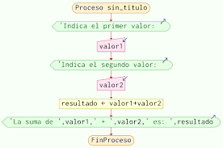

La programación en principiantes se caracteriza por el aprendizaje de los fundamentos esenciales, como el manejo de variables, operadores, condicionales y bucles. Los lenguajes recomendados suelen ser Python o JavaScript, gracias a su simplicidad y legibilidad. Al inicio, los errores y los fallos son frecuentes, lo que puede generar frustración, pero también son oportunidades de aprendizaje clave para mejorar las habilidades de depuración. Los principiantes suelen trabajar en proyectos pequeños y manejables, como calculadoras o mini-juegos, lo que les permite aplicar lo que van aprendiendo. A medida que avanzan, conceptos más complejos como funciones, arreglos y estructuras de datos comienzan a ser introducidos. La lógica de programación es uno de los aspectos más importantes, ya que permite descomponer problemas en partes más manejables. También es fundamental aprender a leer y comprender documentación y recursos externos. Con la práctica y la repetición, los principiantes desarrollan confianza en sus habilidades. Superar pequeños retos refuerza el proceso de aprendizaje y fomenta una mentalidad orientada a la solución de problemas.
Estructuras de DatosListas: Colecciones ordenadas que pueden contener elementos de diferentes tipos. Permiten acceder a elementos mediante índices.
Diccionarios: Estructuras que almacenan pares clave-valor, ideales para almacenar datos relacionados.
Conjuntos: Colecciones sin duplicados, útiles para operaciones de conjunto.
Errores y Depuración Los errores pueden ser de sintaxis, lógicos (el código no funciona como se espera) o de ejecución (el programa se detiene).
